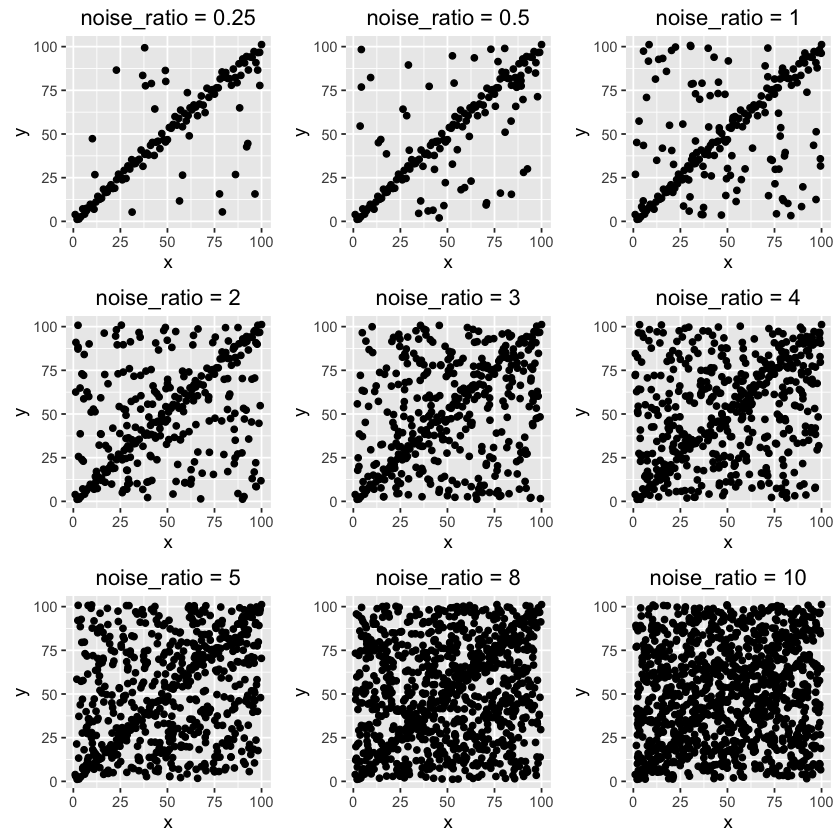
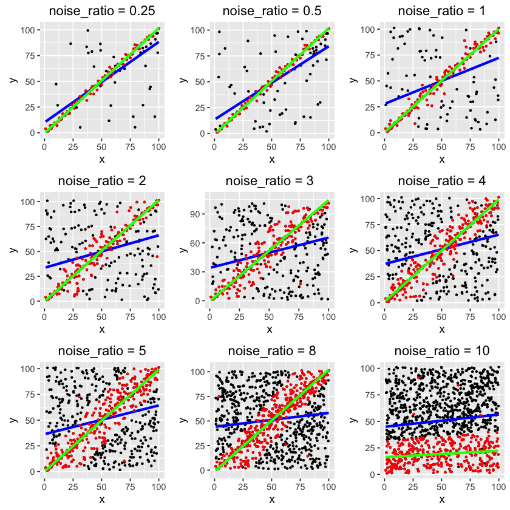

Intuition
Random sample consensus (RANSAC) is one of the techniques that estimate model parameters while the data contains outliers. This technique is not very famous in statistical field, but has been widely used in computer vision. But why? This is also something I want to discuss in this post.
A year ago I was working on a project written in R, and wanted to use this technique; however, I was not able to find a package or immediate code in R, but in many other languages such as Matlab, Python and etc. RANSAC's idea is intuitive and the implementation is simple, so I decided to code it up, but I had not actually worked on it until now.
suppressWarnings(suppressPackageStartupMessages({
library(gridExtra)
library(pryr)
library(ggplot2)
}))
First, we need to generate a dataset with trend and noise components, where the trend is 'clean' data points with strong signal and the noise is something that will potentially damage the signal. The noise data is uniformly distributed in a square grid as you can see below. 9 datasets are generated with different noise-to-clean ratios.
gen_dummy_data <- function(x, y, noise_ratio = 0.5) {
if(length(x) != length(y)) {
stop("Length of x and y have to be the same.")
}
n <- length(x)
trend <- data.frame(x = x, y = y)
noise <- data.frame(x = runif(noise_ratio*n, min(x), max(x)), y = runif(noise_ratio*n, min(y), max(y)))
df <- rbind(trend, noise)
df <- df[sample(1:nrow(df), nrow(df)), , drop = FALSE]
return(df)
}
seed = 1110
m = 100
x <- 1:m
y <- x + rnorm(m, 0, 3)
noise_ratio = c(0.25, 0.5, 1, 2, 3, 4, 5, 8, 10)
set.seed(seed)
df_list <- list()
do.call(partial(grid.arrange, nrow = 3),
lapply(noise_ratio, function(r) {
df <- gen_dummy_data(x, y, noise_ratio = r)
df_list[[as.character(r)]] <<- df
ggplot() +
geom_point(data = df, aes(x, y)) +
ggtitle(sprintf("noise_ratio = %s", r))
})
)

As noise ratio increases, it becomes harder to notice the trend. Let's see if RANSAC is able to detect the trend from the noisy background.
Code
The R code below is my own version of RANSAC which does not change its principle. This is the first draft of the code for prototype. Please review some materials (or at least Wikipedia) about this technique for more details.
Note: MAE is used for goodness of fit of a model The probablity that the algorithm selects only inliers in some iteration is set to be 0.99 to solve for the maximum number of iteration, k. The initial threshold value is set to be the median of absolute errors of a model fitted using all data points. Default noise ratio is 0.7 to derive other parameters if they are not provided.
#' Random sample consensus (RANSAC)
#'
#' @param data dataframe with target column and model matrix columns
#' @param y_col name of target column
#' @param model model function to fit
#' @param model_args list, arguments to the model
#' @param n the minimum number of data values required to fit the model
#' @param k the maximum number of iterations allowed in the algorithm
#' @param t a threshold value for determining when a data point fits a model
#' @param d the number of close data values required to assert that a model fits well to data
#'
#' @return a list of output contains best fitted model, inliers, outliers
#'
RANSAC <- function(data, y_col, model, model_args, n = 2, k = NA, t = NA, d = NA, verbose = FALSE) {
default_ratio = 0.7
model_args_all <- c(model_args, data = list(data))
model_all <- do.call(model, args = model_args_all)
err_abs <- abs(data[, y_col] - predict(model_all, newdata = data[, names(df) != y_col, drop=FALSE]))
if(is.na(t)) {
t <- quantile(err_abs, 0.5, names = FALSE)
}
if(is.na(d)) {
d <- nrow(data)*default_ratio
}
if(is.na(k)) {
k <- as.integer(log(1 - 0.99) / log(1 - default_ratio^n))
}
mae_best <- mean(err_abs)
ind <- 1:nrow(data)
inliers <- c()
i = 1
if(verbose) {
progress_pct = round(quantile(seq(1, k, length.out = 10), probs = seq(0.1, 1, length.out = 10)), 0)
cat(sprintf("Begin RANSAC algoritm with parameters:\nn = %s\nk = %s\nt = %s \nd = %s\n\n", n, k, t, d))
}
while(i <= k) {
if(verbose && (i %in% progress_pct) ) {
cat(sprintf("Completion percentage: %s\n", names(progress_pct)[which(i == progress_pct)]))
}
inliers_case <- sample(ind, n)
model_args_case <- c(model_args, data = list(data[inliers_case, , drop=FALSE]))
model_case <- do.call(model, model_args_case)
predict_args_case = list(
object = model_case,
newdata = data[-inliers_case, , drop=FALSE]
)
yhat <- do.call(predict, predict_args_case)
y <- data[-inliers_case, y_col]
res <- abs(yhat - y)
inliers_case <- c(inliers_case, names(res)[which(res < t)])
if(length(inliers_case) > d) {
data_inliers <- data[inliers_case, , drop=FALSE]
model_inliers_args <- c(model_args, data = list(data_inliers))
model_inliers <- do.call(model, model_inliers_args)
predict_inliers_args_case = list(
object = model_inliers,
newdata = data_inliers
)
mae_inliers <- mean(abs(data_inliers[, y_col] - do.call(predict, predict_inliers_args_case)))
if(mae_inliers < mae_best) {
model_best <- model_inliers
mae_best <- mae_inliers
inliers <- inliers_case
}
}
i = i + 1
}
if(!exists("model_best")) {
warning("Final model could not be found, using all data to fit the model. ")
model_best <- model_all
}
model_best["call"] <- sprintf("Model with formula: %s", model_args[["formula"]])
inliers_df = data[sort(inliers), , drop = FALSE]
outliers_df = data[setdiff(ind, sort(inliers)), , drop = FALSE]
if(verbose) {
cat(sprintf("%s (%.1f%%) inliers out of %s total data points have been used. \n", length(inliers), length(inliers) / nrow(data) * 100, nrow(data)))
}
return(list(model = model_best, inliers = inliers_df, outliers = outliers_df))
}
Next we just loop through different scenarios. For convenience, I hard coded n=5 and k=500 here, which are supposed to be further optimized.
plot_list <- list()
for(r in noise_ratio) {
args_list = list(
data = df_list[[as.character(r)]],
y_col = "y",
model = lm,
model_args = list(formula = "y ~ x"),
n = 5,
k = 500,
t = NA,
d = m / (1 + r),
verbose = FALSE
)
set.seed(seed)
fit <- RANSAC(data = args_list[["data"]],
y_col = args_list[["y_col"]],
model = args_list[["model"]],
model_args = args_list[["model_args"]],
n = args_list[["n"]],
k = args_list[["k"]],
t = args_list[["t"]],
d = args_list[["d"]],
verbose = args_list[["verbose"]]
)
p <- ggplot() +
geom_point(data = args_list[["data"]], aes(x = x, y = y), size = 0.6) +
stat_smooth(data = args_list[["data"]], aes(x = x, y = y), method = "lm", alpha = 0, color = "blue", size = 1.2) +
geom_point(data = fit[["inliers"]], aes(x, y), color = "red", size = 0.6) +
stat_smooth(data = fit[["inliers"]], aes(x = x, y = y), method = "lm", alpha = 0, color = "green", size = 1.2) +
ggtitle(sprintf("noise_ratio = %s", r))
plot_list[[as.character(r)]] <- p
}
do.call(partial(grid.arrange, nrow = 3), lapply(plot_list, function(x) {x}))

The blue lines are regular OLS regressions using all data points, so of course they do not fit the trend well.
The red points are the inliers selected by the algorithm, and the green lines are best fits.
As you can see, RANSAC is able to detect the trend even with high noise rate. It only fails on the last one, where noise-to-clean ratio is 10:1. If you further optimize the parameters, the algorithm may not fail.
Discussion
Going back to the question: why is RANSAC not widely used in statistics field?
There are strong reasons why it is being used in computer vision. There is a concept of noise in CV, where image noise should not give any information to an image. On ther other hand, RANSAC discards a large portion of data, making no attempt to accommodate the outliers. In simple word, it treats the detected outliers that genuinely don't belong to the sample, which is somehow against the philosophy of statistics. Not many statistical approaches attempt to do so. Also, there are many other well-performing robust estimation techniques that better obey statistical philosophy.
Ending
RANSAC is a quick, simple, intuitive approach for many statistical analyses such as anomaly detection, forecasting, pattern recognition and etc. As people who love statistics and data, we should put it in our tool set.
Hope this is helpful and please let me know of any questions regarding this post.
Leave your comments below.